🇪🇸 Term 1 — Study Guide
Topics: feelings • personal information • birthdays, dates & numbers • school things in your bag • colours • describing your things • family • physical description • personality • pets
💡 How to use this guide: cover the English column with your hand, look at the Spanish word (and the picture), and say what it means. Then swap — look at the English and say the Spanish. The pictures are there to help the word "stick" in your memory. 🧠
1.1 ¿Cómo estás? — How are you (feeling)?
We use the verb estar for feelings: estoy = I am, no estoy = I am not.
🔑 Sentence pattern: Estoy + feeling, and you can add a reason with porque (because) or contrast with pero (but). Example: Estoy contento porque es mi cumpleaños. = I'm happy because it's my birthday.
How well you feel
| Spanish | Say it like | English |
|---|---|---|
| (Estoy) fenomenal | feh‑noh‑meh‑NAL | great / fantastic |
| (Estoy) muy bien | mwee bee‑EN | very well |
| (Estoy) bien | bee‑EN | well / fine |
| (Estoy) regular | reh‑goo‑LAR | so‑so / OK |
| (Estoy) mal | mal | bad |
| (Estoy) muy mal | mwee mal | very bad |
| (Estoy) fatal | fah‑TAL | terrible |
Emotions (these change ending: ‑o for boys, ‑a for girls)
| Spanish | Say it like | English |
|---|---|---|
| contento/a | kon‑TEN‑toh | happy |
| triste | TREES‑teh | sad |
| cansado/a | kan‑SAH‑doh | tired |
| enfadado/a | en‑fah‑DAH‑doh | angry |
| tranquilo/a | tran‑KEE‑loh | calm / relaxed |
| feliz | feh‑LEES | happy |
| preocupado/a | preh‑oh‑koo‑PAH‑doh | worried |
| enfermo/a | en‑FER‑moh | ill / sick |
| nervioso/a | ner‑bee‑OH‑soh | nervous |
| estresado/a | es‑treh‑SAH‑doh | stressed |
| emocionado/a | eh‑moh‑see‑oh‑NAH‑doh | excited |
| celoso/a | theh‑LOH‑soh | jealous |
🧠 Remember: triste sounds like "triste" → think of a tris‑te little tear. Cansado → you "can't" go on, you're tired.
1.2 La ficha — Personal information
| Question (someone asks you) | Your answer |
|---|---|
| ¿Cómo te llamas? (What are you called?) | Me llamo Ana. (My name is Ana.) |
| ¿Cuántos años tienes? (How old are you?) | Tengo doce años. (I am 12 years old.) |
| ¿Dónde vives? (Where do you live?) | Vivo en Londres. (I live in London.) |
| ¿Cuándo es tu cumpleaños? (When is your birthday?) | Mi cumpleaños es el 5 de mayo. |
⚠️ Watch out! In Spanish you have years, you are not "X years". Tengo 12 años = literally "I have 12 years".
1.3 Mi cumpleaños — Birthday, numbers, days & months
Numbers 1–31 (you need these for dates!)
| # | Spanish | # | Spanish | # | Spanish |
|---|---|---|---|---|---|
| 1 | uno / primero | 11 | once | 21 | veintiuno |
| 2 | dos | 12 | doce | 22 | veintidós |
| 3 | tres | 13 | trece | 23 | veintitrés |
| 4 | cuatro | 14 | catorce | 24 | veinticuatro |
| 5 | cinco | 15 | quince | 25 | veinticinco |
| 6 | seis | 16 | dieciséis | 26 | veintiséis |
| 7 | siete | 17 | diecisiete | 27 | veintisiete |
| 8 | ocho | 18 | dieciocho | 28 | veintiocho |
| 9 | nueve | 19 | diecinueve | 29 | veintinueve |
| 10 | diez | 20 | veinte | 30 / 31 | treinta / treinta y uno |
Days of the week — los días (Spanish does not use capital letters!)
lunes (Mon) · martes (Tue) · miércoles (Wed) · jueves (Thu) · viernes (Fri) · sábado (Sat) · domingo (Sun)
Months — los meses (also no capital letters)
enero (Jan) · febrero (Feb) · marzo (Mar) · abril (Apr) · mayo (May) · junio (Jun) · julio (Jul) · agosto (Aug) · septiembre (Sep) · octubre (Oct) · noviembre (Nov) · diciembre (Dec)
🔑 Saying a date: el + number + de + month. Example: el quince de junio = the 15th of June. Hoy es lunes, dos de mayo. = Today is Monday, the 2nd of May.
1.4 En mi mochila — In my schoolbag
🔑 Sentence patterns: Tengo (I have) · No tengo (I don't have) · Hay (there is/are) · Quiero (I want). Use un before boy‑words (masculine) and una before girl‑words (feminine).
 la mochila moh‑CHEE‑lah backpack |
 el estuche es‑TOO‑cheh pencil case |
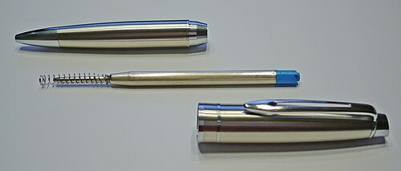 el bolígrafo boh‑LEE‑grah‑foh pen |
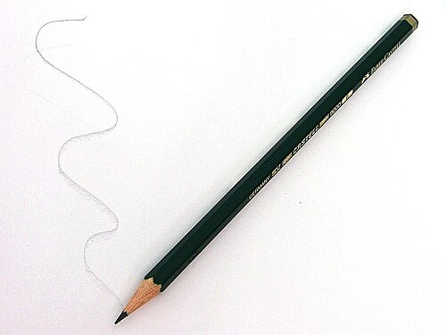 el lápiz LAH‑peeth pencil |
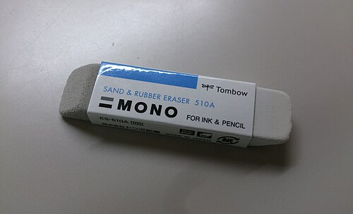 la goma GOH‑mah rubber / eraser |
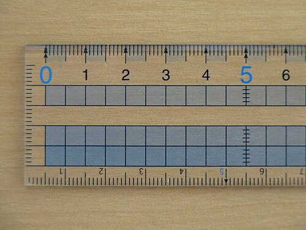 la regla REH‑glah ruler |
el sacapuntas sah‑kah‑POON‑tas pencil sharpener |
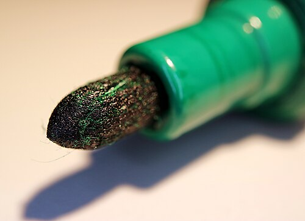 el rotulador roh‑too‑lah‑DOR felt‑tip / marker |
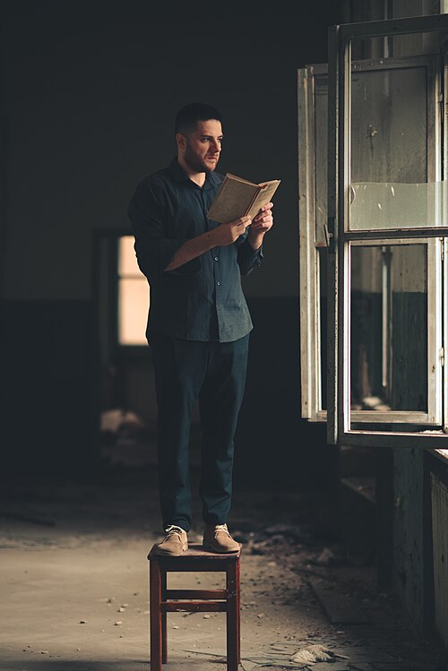 el libro LEE‑broh book |
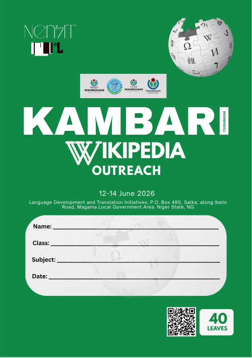 el cuaderno kwah‑DER‑noh exercise book |
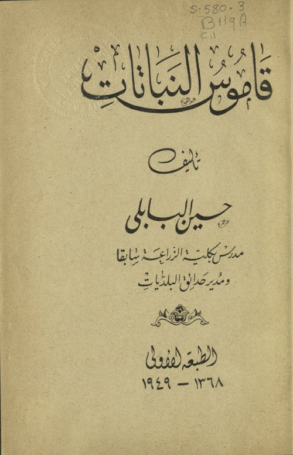 el diccionario deek‑see‑oh‑NAH‑ree‑oh dictionary |
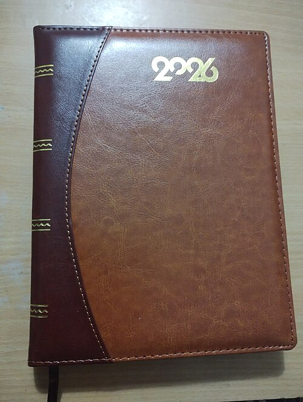 la agenda ah‑HEN‑dah planner / diary |
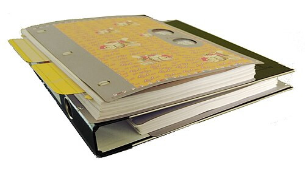 la carpeta kar‑PEH‑tah folder |
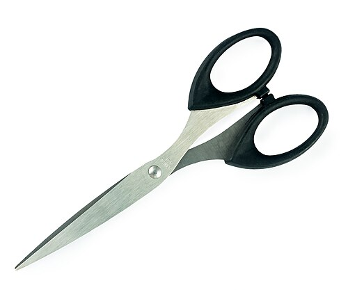 las tijeras tee‑HEH‑ras scissors |
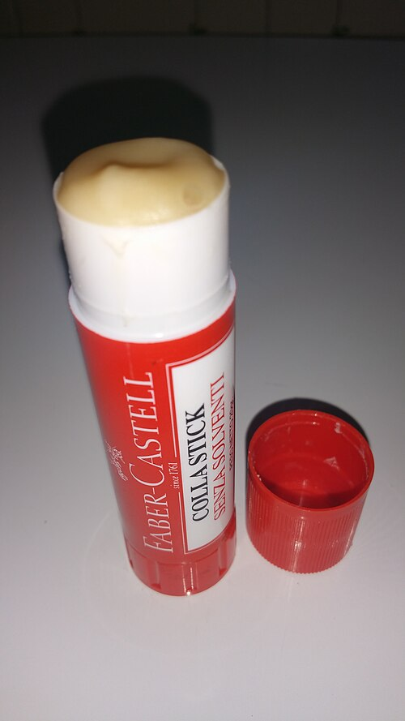 el pegamento peh‑gah‑MEN‑toh glue (stick) |
 la calculadora kal‑koo‑lah‑DOH‑rah calculator |
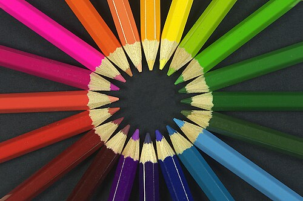 los lápices de colores LAH‑pee‑thes colouring pencils |
1.5 Los colores — Colours
🔑 In Spanish the colour goes after the noun, and it must "agree": un libro rojo (a red book), una goma roja (a red rubber). Colours ending in ‑o change to ‑a for feminine; others stay the same.
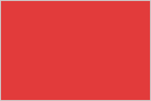 rojo/a — red |
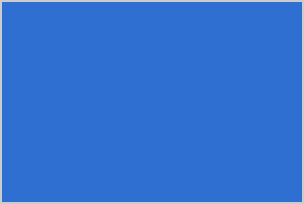 azul — blue |
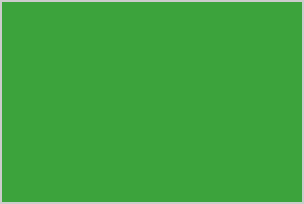 verde — green |
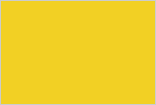 amarillo/a — yellow |
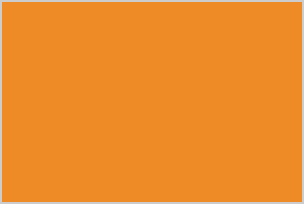 naranja — orange |
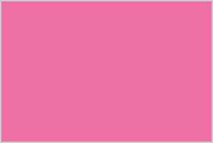 rosa — pink |
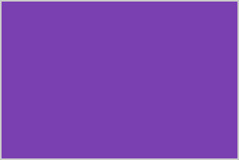 morado/a — purple |
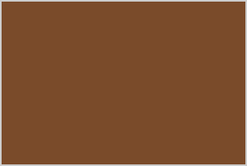 marrón — brown |
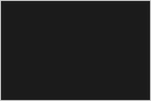 negro/a — black |
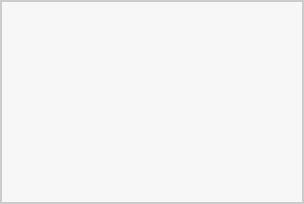 blanco/a — white |
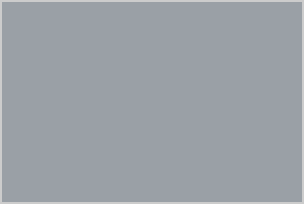 gris — grey |
🧠 Remember: verde = think "verdant" grass (green). negro = think "Negro" / night = black. rojo → think "Rouge".
1.6 Describir el material escolar — Describing your school things
🔑 es = it is (one thing) · son = they are (more than one). Add a reason with porque (because). The adjective agrees: ‑o (boy‑word), ‑a (girl‑word), ‑os/‑as (plural).
| Spanish (m / f) | English |
|---|---|
| chulo / chula | cool |
| nuevo / nueva | new |
| bonito / bonita | nice / pretty |
| útil | useful |
| viejo / vieja, antiguo / antigua | old |
| horroroso / horrorosa | rubbish / horrible |
| feo / fea | ugly |
Example: Mi mochila es nueva y bonita. = My backpack is new and nice. Mis lápices son viejos pero útiles. = My pencils are old but useful.
1.7 La familia — Family
🔑 Tengo (I have) + family member. No tengo (I don't have). Soy hijo único / hija única = I'm an only child. mi = my (one person), mis = my (more than one person). En mi familia hay... = In my family there is/are...
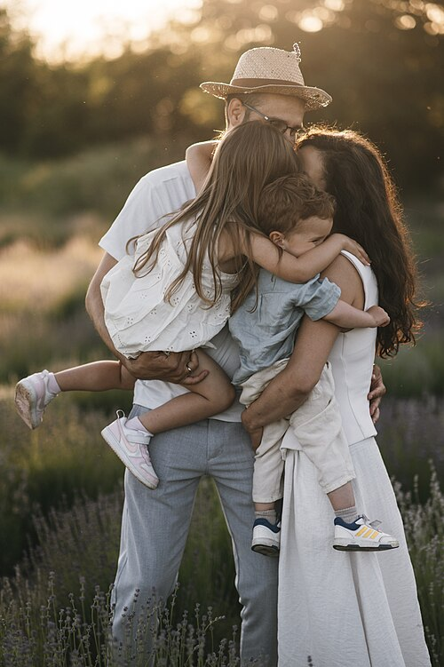 la familia family |
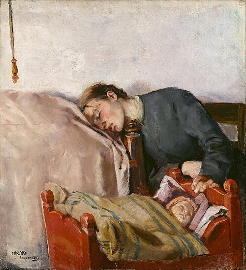 la madre mother |
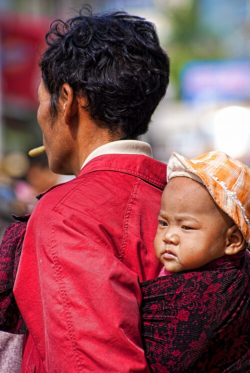 el padre father |
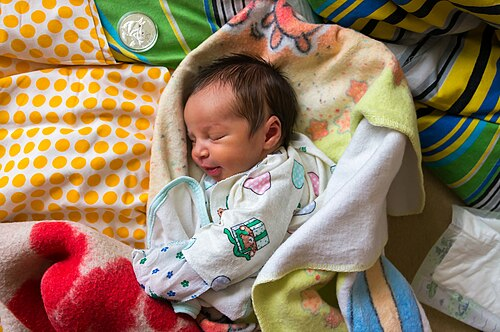 el bebé baby |
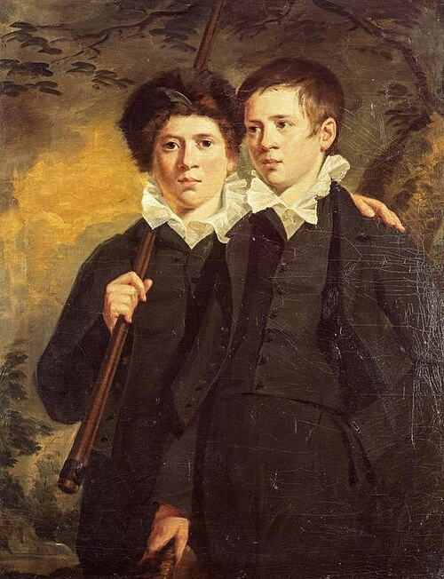 el hermano brother |
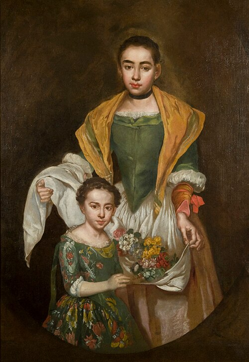 la hermana sister |
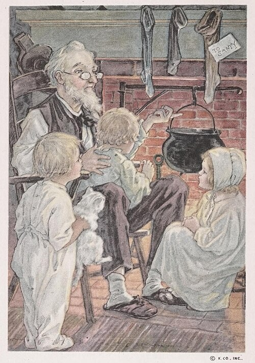 el abuelo grandfather |
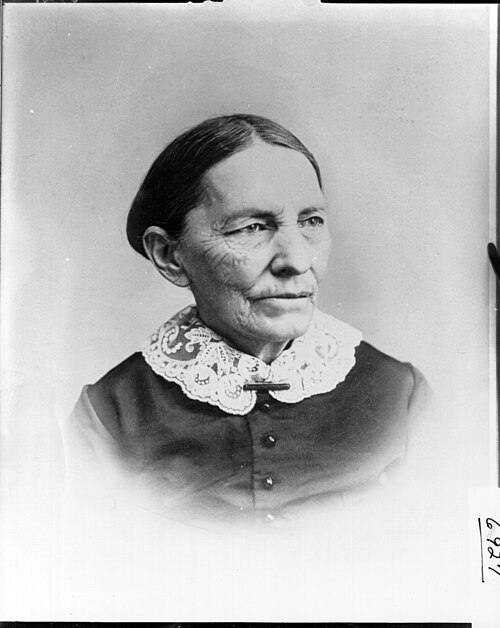 la abuela grandmother |
| Spanish | English | Spanish | English |
|---|---|---|---|
| mis padres | parents | mis abuelos | grandparents |
| el padrastro | stepfather | la madrastra | stepmother |
| el hermanastro | stepbrother | la hermanastra | stepsister |
| el tío / la tía | uncle / aunt | el primo / la prima | cousin (m/f) |
| el hermano mayor | older brother | el hermano menor | younger brother |
1.8 La descripción física — What you look like
🔑 Tengo el pelo... (I have ... hair) and Tengo los ojos... (I have ... eyes). Soy... (I am ...) for height.
| Hair — el pelo | Eyes — los ojos | Height / extras |
|---|---|---|
| rubio = blond | azules = blue | alto/a = tall |
| moreno / castaño = brown / dark | verdes = green | bajo/a = short |
| pelirrojo = red‑haired | marrones = brown | de estatura media = medium height |
| negro = black | grises = grey | Llevo gafas = I wear glasses |
| corto / largo = short / long | Tengo barba = I have a beard | |
| liso / rizado / ondulado = straight / curly / wavy | Tengo pecas = I have freckles |
Example: Tengo el pelo largo y rizado y los ojos verdes. Soy alta. = I have long curly hair and green eyes. I am tall.
1.9 La personalidad — Personality
🔑 Soy... (I am ...) · No soy... (I am not ...). Endings change ‑o → ‑a for girls; words ending in ‑e or a consonant usually stay the same.
| Spanish (m/f) | English | Spanish (m/f) | English |
|---|---|---|---|
| divertido/a | fun | trabajador/a | hardworking |
| gracioso/a | funny | perezoso/a | lazy |
| simpático/a | nice / friendly | antipático/a | unfriendly |
| hablador/a | talkative | tímido/a | shy |
| inteligente | intelligent | estudioso/a | studious |
| generoso/a | generous | serio/a | serious |
| deportista | sporty | ambicioso/a | ambitious |
1.10 Las mascotas — Pets
🔑 Tengo un/una... (I have a...) · No tengo... (I don't have...). Se llama... = It's called... For more than one, add a number: Tengo dos perros (I have two dogs).
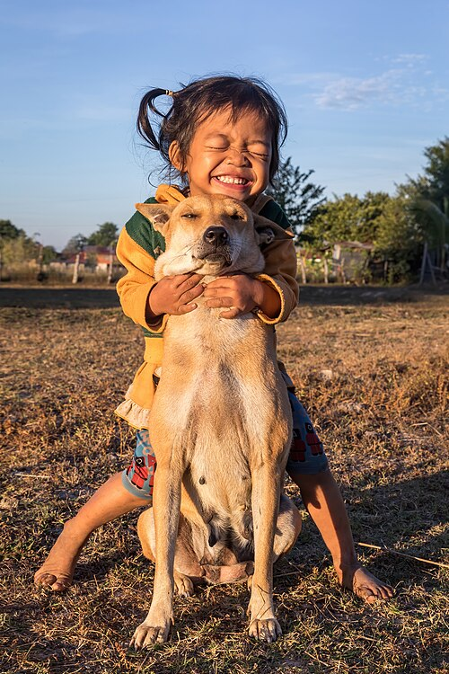 un perro — a dog |
 un gato — a cat |
 un conejo — a rabbit |
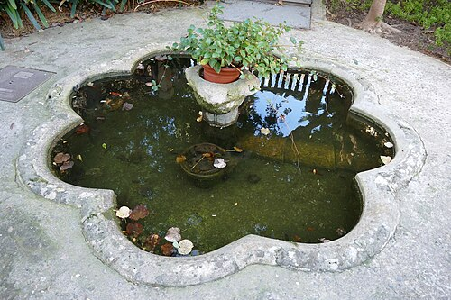 un pez — a fish |
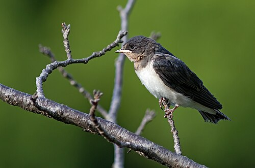 un pájaro — a bird |
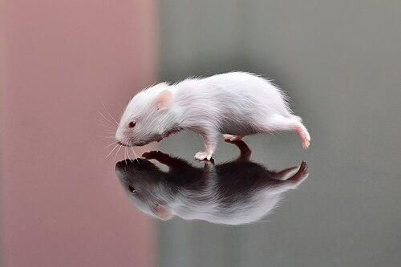 un hámster — a hamster |
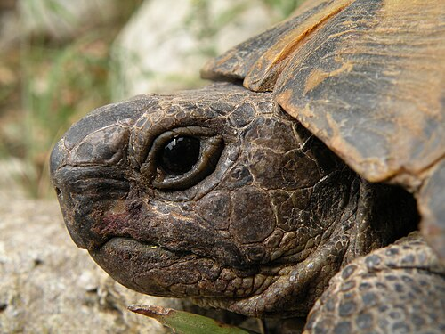 una tortuga — a tortoise |
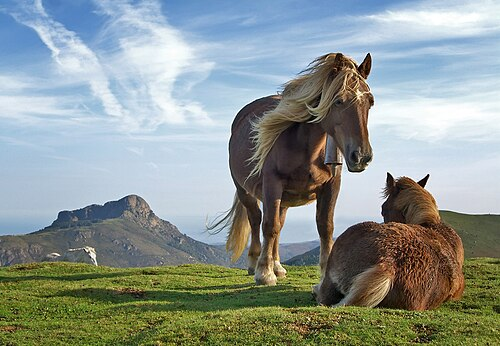 un caballo — a horse |
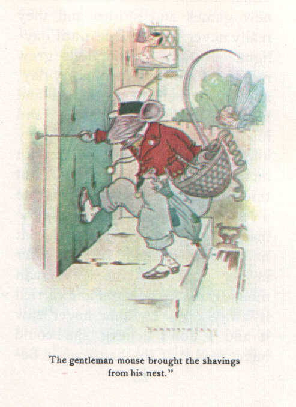 un ratón — a mouse |
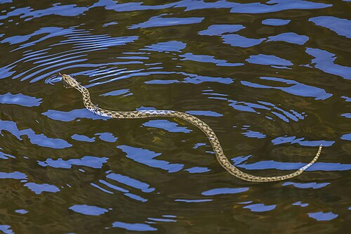 una serpiente — a snake |
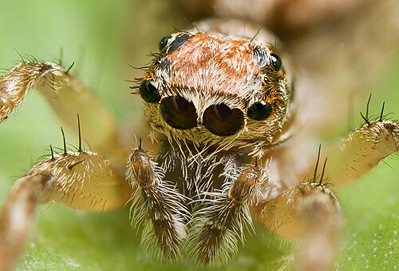 una araña — a spider |
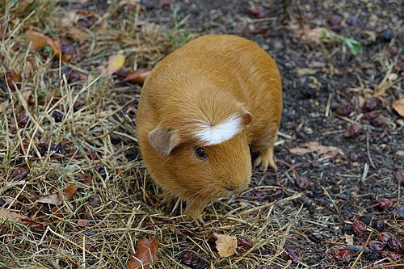 una cobaya — a guinea pig |
Example: Tengo un perro negro. Se llama Max y es muy gracioso. = I have a black dog. He's called Max and he's very funny.
✅ Quick self‑test (cover the right side!)
- I am tired → Estoy cansado/a
- the 21st of March → el veintiuno de marzo
- I have a red pencil case → Tengo un estuche rojo
- My backpack is new → Mi mochila es nueva
- I have two cats → Tengo dos gatos
👉 When these feel easy, go to Term 1 → MCQ Mock 1.